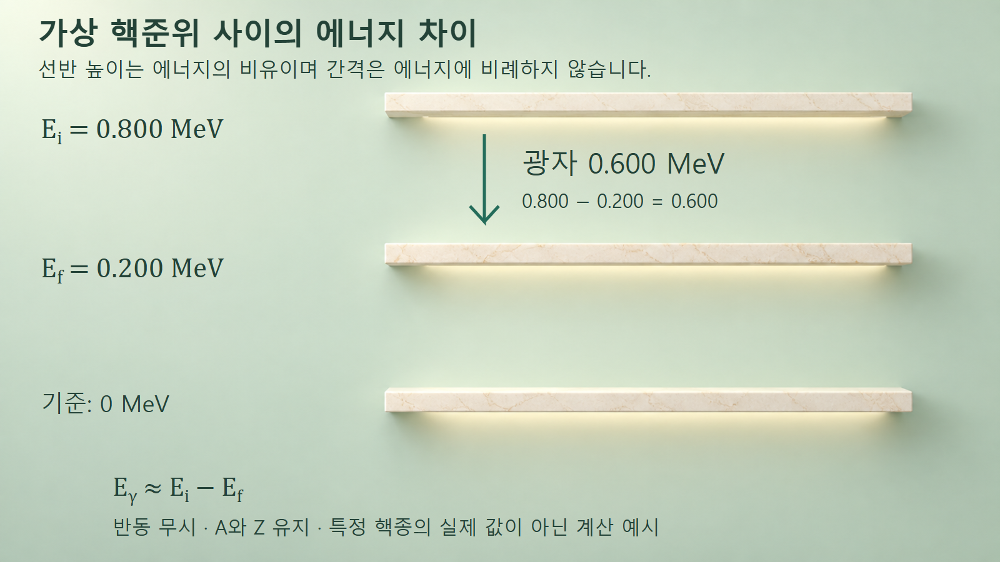
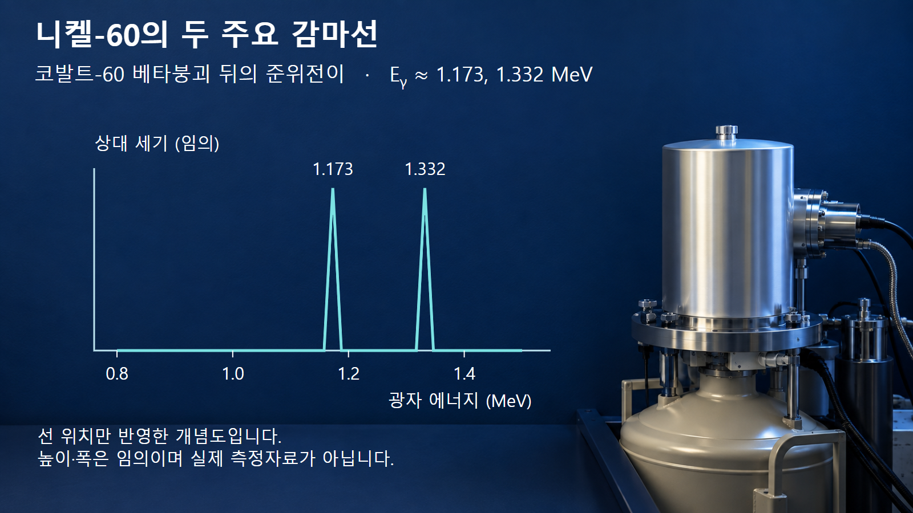

방사성붕괴와 시간 · 046
감마붕괴
원소를 유지하며 에너지를 내보내는 핵준위 전이
감마선의 에너지는 핵의 두 상태 사이 차이에서 나옵니다. 앞선 핵종 변화와 뒤따르는 감마선 방출을 구별해 실제 선원을 읽습니다.
핵종을 유지하는 에너지준위 전이
감마붕괴는 들뜬 원자핵이 더 낮은 에너지 상태로 이동하며 광자를 방출하는 과정입니다. 광자는 전자기복사의 에너지 묶음이며, 감마선은 이 핵준위 전이에서 나옵니다. 핵에서 양성자나 중성자를 꺼내는 과정이 아니므로 질량수 A와 원자번호 Z가 유지됩니다.
높은 핵에너지 상태에서 낮은 상태로 전이할 때 핵의 반동도 함께 고려합니다. [1] 초기 핵을 X*로 나타낼 때 별표는 여기상태를 뜻하며, X* → X + γ에서 X의 원소와 질량수는 같습니다. 다만 에너지가 빠져나간 만큼 핵의 질량에너지 상태는 달라집니다.
이때 ‘붕괴’라는 말이 핵이 조각으로 부서진다는 뜻은 아닙니다. 감마붕괴에서는 핵의 구성보다 에너지 상태 변화에 주목합니다. 여기된 핵은 앞선 알파·베타붕괴나 핵반응으로 만들어질 수 있으므로, 핵종 변화와 이후 감마선 방출은 순서를 나누어 추적해야 합니다.
광자 에너지와 핵 반동의 분배
초기 핵준위의 에너지를 Ei, 최종 준위의 에너지를 Ef라고 하면 준위차는 ΔE = Ei − Ef입니다. 처음 핵이 정지해 있고 외부와 에너지를 주고받지 않는 경우, 이 차이는 광자 에너지 Eγ와 딸핵 반동 운동에너지의 합으로 나뉩니다.
광자는 에너지뿐 아니라 운동량도 운반하므로 핵이 반대 방향으로 반동합니다. 무거운 핵의 반동에너지가 준위차에 비해 작을 때 Eγ ≈ Ei − Ef로 근사합니다. 이 근사기호를 빼고 정밀 핵준위 차이와 측정 광자 에너지가 항상 똑같다고 쓰면 오차의 원인을 놓칩니다.
광자와 반동핵으로 이루어진 한 전이에서는 에너지 조건이 정해집니다. 반면 앞서 배운 베타붕괴에서는 세 입자가 에너지를 나누므로 베타입자 에너지가 연속적으로 분포합니다. 감마선의 선 에너지와 베타 스펙트럼의 끝점 에너지를 같은 종류의 값으로 읽지 않습니다.
예시 1: 가상 준위의 차이 계산
어떤 핵의 초기 준위를 0.800 MeV, 최종 준위를 0.200 MeV라고 가정하겠습니다. 두 값의 기준은 같은 핵의 바닥상태입니다. 먼저 차이를 계산하면 0.800 − 0.200 = 0.600 MeV이며, 반동을 무시하면 광자 한 개가 약 0.600 MeV를 운반합니다.
이 전이 이후 핵은 0.200 MeV 준위에 남습니다. 첫 광자를 내보냈다고 반드시 바로 바닥상태에 도착한 것은 아니며, 허용되는 후속 전이가 있다면 다시 더 낮은 준위로 갈 수 있습니다. 이 예시는 반동을 무시한 가상 준위이며 특정 핵종의 실제 핵자료가 아닙니다.

위치가 높은 선반에서 낮은 선반으로 내려오는 그림은 에너지 차이의 비유입니다. 핵 속에 물리적인 선반이나 층이 있다는 뜻이 아니며, 도식 간격도 실제 준위차에 비례하지 않습니다. 실제 경로는 준위의 에너지뿐 아니라 각운동량·전이 확률 등의 조건으로 결정됩니다.
예시 2: 코발트-60 뒤의 니켈-60 감마선
코발트-60은 베타 마이너스 붕괴로 여기된 니켈-60을 만듭니다. [2] 베타붕괴 단계에서는 원자번호가 27에서 28로 바뀝니다. 그다음 니켈-60이 감마선을 내보낼 때에는 원자번호 28과 질량수 60이 유지됩니다.
대표적인 연속 전이는 니켈-60의 약 2.506 MeV 준위에서 약 1.333 MeV 준위로, 이어 바닥상태로 내려가는 경로입니다. 주요 광자 에너지는 1173.228 keV와 1332.492 keV이며, 그림에서는 각각 1.173 MeV와 1.332 MeV로 반올림했습니다. [2]
따라서 코발트-60 선원이라는 이름과 감마선을 방출하는 순간의 핵종을 구별해야 합니다.

위 두 주요 광자의 에너지 합은 1173.228 + 1332.492 = 2505.720 keV입니다. 이 합은 대표적인 두 광자의 합계이며, 코발트-60 베타붕괴 전체 Q값이나 각 사건에서 검출기에 침적되는 에너지와 같지 않습니다. 베타입자·반중성미자·반동과 다른 약한 분기도 구분해야 합니다.
선 에너지와 검출계수의 서로 다른 역할
감마선의 에너지 위치는 핵준위를 식별하는 단서이고, 특정 선의 계수는 방출확률과 시료의 활동도, 검출효율, 측정시간 등의 영향을 받습니다. 그러므로 두 피크가 보인다는 사실과 두 피크의 높이가 같다는 주장은 서로 다릅니다. 이 글의 선스펙트럼은 위치를 설명하기 위한 개념도이며 높이와 폭은 측정값이 아닙니다.
NIST의 코발트-60 수조선원은 산업용 고선량 교정과 재료 조사에 쓰인 사례입니다. [3] 해당 수조선원은 2018년에 해체됐으므로 현재 운영 중인 시설로 소개하지 않습니다. 활용 사례의 핵심은 잘 특성화된 방사선장을 통해 측정기의 응답을 비교한다는 점입니다.
선원 이름만으로 검출기에서 기록될 신호를 확정할 수는 없습니다. 광자가 물질에서 일부 에너지만 잃거나 여러 신호가 합쳐지는 효과는 별도로 다루어야 하며, 실제 계측에는 장비의 응답과 배치 조건이 필요합니다.
감마선과 X선 구별 및 전이의 한계
감마선과 X선은 모두 광자입니다. 이 글에서 구분하는 기준은 에너지의 크기만이 아니라 발생 과정입니다. 감마붕괴의 광자는 핵준위 전이에서 나오며, 앞 글의 특성 X선은 전자껍질 재배열에서 나옵니다. 감마선은 반드시 모든 X선보다 에너지가 높다는 식의 절대 경계로 외우지 않습니다.
또한 여기된 핵이 에너지를 잃는 모든 과정이 광자 방출은 아닙니다. 다음 글의 내부전환처럼 전자와 직접 에너지를 주고받는 경쟁 경로도 있습니다. 준위가 있다고 항상 동일한 감마선이 100% 방출된다고 판단하지 말고, 해당 전이의 방출확률과 경쟁 경로를 함께 읽어야 합니다.
핵종 변화와 준위 변화의 분리
감마붕괴를 읽는 순서는 초기 핵종 확인, 초기·최종 준위 확인, 광자와 반동 에너지 구분입니다. 코발트-60 사례에서는 베타붕괴로 핵종이 먼저 바뀐 뒤 니켈-60이 에너지를 잃습니다. 아래 표처럼 단계별로 무엇이 보존되고 무엇이 변하는지 적으면 선원 이름과 광자의 발생 원인을 혼동하지 않습니다.
| 단계 | A·Z | 주요 해석 |
|---|---|---|
| Co-60 베타붕괴 | A=60, Z:27→28 | 여기된 Ni-60 형성 |
| Ni-60 감마전이 | A=60, Z=28 유지 | 핵준위 감소·광자 방출 |
| 광자와 물질의 상호작용 | 발생 핵종 식별과 별도 | 산란·에너지 침적 |
| 계측 신호 | 검출기 응답에 의존 | 선 에너지와 계수 분리 |